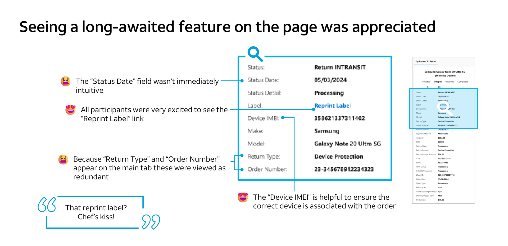
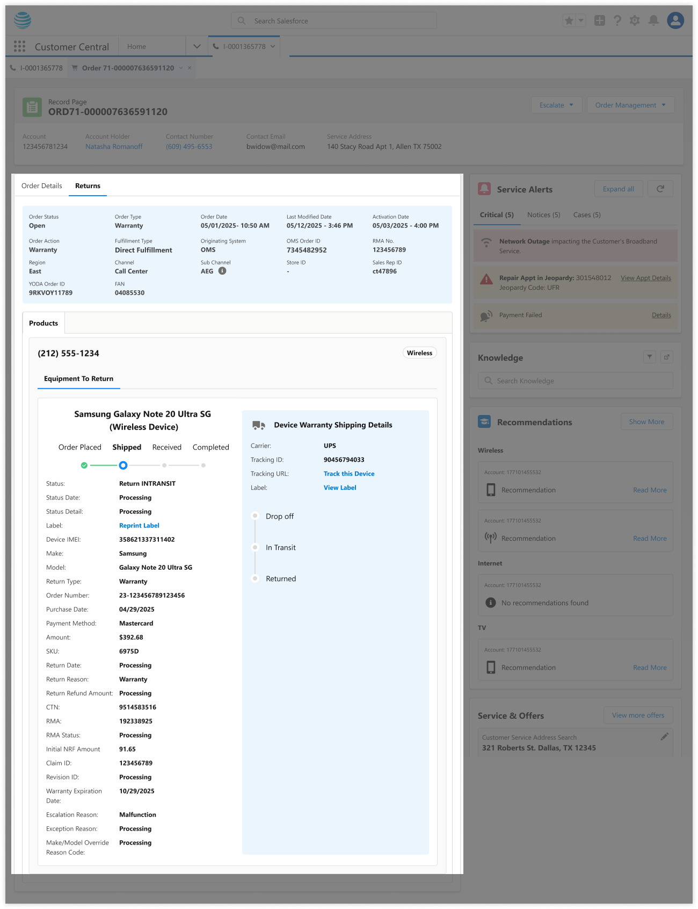
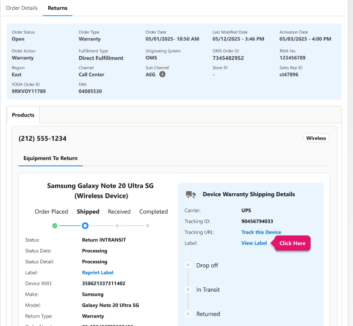
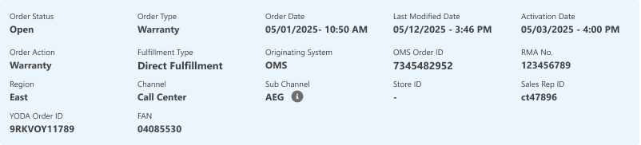
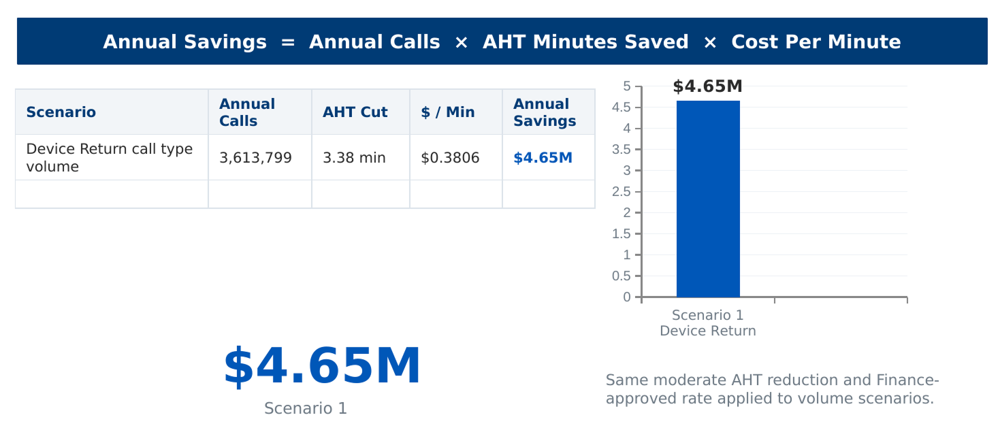

Device Return
Journey
Six return programs, seven backend systems, one agent trying to answer a customer's question. I owned UX for device returns across call-center desktop and in-store tablet, and initiated the research that proved a reframe was the right call.
The Problem
Frontline experts had no single, return-type aware view of a wireless return. The interface that existed answered a different question than the one customers were asking.
An expert helping with a returned phone had to leave the Equipment tab, hunt across Order and Returns views, and sometimes swivel to other systems entirely. Every return type carried different rules and completion definitions, but the interface treated them identically — same generic fields regardless of relevance, untranslated backend values like cash-carry and DF/INBOUND left for experts to interpret mid-call. This case study focuses on Device Protection and Warranty, the highest-friction returns.
The question underneath the problem
Every symptom traced back to one missing answer: does the customer still owe AT&T a device, or not? I reframed the redesign around three questions the interface needed to answer, in order, before showing anything else:
Does the customer still owe a device?
What evidence explains the current status?
What should the expert do next?
My Role & Approach
I owned the return experience for Device Protection and Warranty end to end, with day-to-day autonomy and light design-lead oversight.
- Refused to design from assumptions. An in-store handoff and a mailed exchange look identical to a customer but carry different obligations — I wasn't willing to guess.
- Initiated the research myself. I reached out to the research team directly and walked them through the design alongside my PM and business partner, who were already aligned, then scoped the study with researcher Angie DeFord.
Research I Initiated
Device Protection & Warranty Order Research — with UX Researcher Angie DeFord
A focus-group study pressure-testing the proposed Order and Returns tabs across three scenarios — an initial claim, a first revision, and a second revision — with nine frontline experts across Mobility Loyalty, Sales & Service, CX Labs, and the Centralized Support Desk.
What we heard
- Experts identified an open insurance claim quickly once labels like "Insurance" and "Device Protection" were visible.
- Past the first revision, experts could tell something changed but not why — several fell back to reading call notes, the exact swivel the redesign was meant to remove.
- The dense return screen was called "overwhelming" by more than one participant — density without hierarchy, not information itself, was the problem.
- Some fields had no clear owner in the expert's mental model: nobody could explain "Refund Amount," and "Claim ID" was recognized as an Asurion-side identifier irrelevant to their workflow.
- Other details were genuinely load-bearing — RMA number was named directly as one of the most useful fields, especially for lost-equipment cases.
"You have to section this stuff — you can't just have it as a list."
Research Participant, Device Protection StudyThat line set the direction: restructure around the scenario the expert is in, not the data source, and cut fields no one could explain.

The Design Decision That Mattered Most
Organize the interface around customer responsibility, not backend structure.
The source systems modeled an in-store handoff, a shipped exchange, an RMA, and internal reverse-logistics movement as different technical objects. I collapsed that into the one question an expert needed answered: is the customer still on the hook? A store might accept a device and later ship it internally to a warehouse — the customer's obligation ended at handoff, but a naive design would keep showing tracking detail that implied otherwise. I separated customer return accountability from internal inventory movement, so internal logistics events could never be misread as an open customer obligation.
The tradeoff I had to resolve
Device Protection and Warranty is operationally complete the moment a carrier scans pickup — but a generic tracker still implied "Received" was required. Shipment events were still valuable evidence when a customer disputed a return.
Remove the secondary shipment timeline entirely for Device Protection and Warranty — it doesn't reflect how those journeys actually close out, and it risks confusing experts with a milestone that isn't required.
Keep the full shipment history visible in every case, because Drop Off and Returned events are exactly what an expert needs when a customer disputes the return.
I separated the two needs instead of picking one: a primary status communicates whether the customer's obligation is complete, using each journey's real completion logic — no "Received" milestone where it doesn't apply, no rejection state where rejection isn't part of the process. Supporting shipment evidence stays available underneath for the dispute cases that actually need it.
Where I chose to hold the line
When the team considered surfacing raw Order Type/Action values in Order History, I pushed to pause it — values like Modify.change… meant nothing without translation. I'd rather ship less and have every field mean something than ship more and make experts guess.

The Solution
Translate the backend into plain language
Fulfillment values like cash-carry, CC, ship, DF became two plain labels experts could act on. Worked with content designer Laura Landgren to get the language right.
In-Store Return
- BRE type, receipt & transaction ID
- Device IMEI, serial, SKU, make/model
- Store location, return date & reason
- Refund amount & restocking fee
- No RMA shown — the handoff is already complete
Mail-In Return
- RMA number, status, creation date
- Return-by date & non-return fee
- CTN and shipment tracking
- Original order & payment detail
- Full RMA lifecycle, since the device is still in transit
Fix the navigation, not just the page
Added return/exchange visibility directly to the Equipment tab — the most-cited pain point in the study. Related order revisions were grouped so experts didn't reconstruct them manually.

The same accountability/logistics split generalized cleanly — it was later applied to Trade In and Same Day Delivery returns without needing a second version of the underlying model.
Make validation part of the process, not an afterthought
I proposed making frontline validation a formal checkpoint, not an optional step:
Catching changes here means they're still cheap — before engineering builds against a wrong assumption.
Grounded in Existing Research, Too
I also drew on an existing AT&T persona framework — built from 75+ interviews, 60 survey responses, and dozens of hours of observation — to see how experts operate across their broader day. It consistently surfaced a pattern I designed directly against: too many disconnected systems, with every extra swivel eroding efficiency and confidence on a live call. I didn't run that research, but cross-referencing it against my own gave me a second, independent signal that consolidation was the right problem to solve.
Consistent pattern: too many disconnected systems — every extra swivel erodes efficiency and confidence on a live call.
Collaboration
Shipped through sustained coordination across the Customer Connect platform team, the OrderGraph backend team, and research/content partners. Because return logic touched real consequences — refunds, non-return fees, RMA deadlines — I worked closely with business stakeholders to keep the interface honest, not just cleaner-looking.

Impact
Validated — Frontline Review
Before a line of it was built, frontline reviewers evaluated the redesigned Figma directly:
"Will SAVE so much time trying to find returns."
Frontline Expert, Design ReviewModeled — Business Case
This redesign was tied to a finance-partnered handle-time and savings model spanning several million annual Device Return contacts.
- Experts called the new flow easier to navigate and expected it to meaningfully cut click time, especially for new hires.
- Several asked to join the eventual pilot — an informal but strong vote of confidence.
- Conditional field display fixed the confusion research surfaced: no RMA info on returns without one, and the unexplained "Refund Amount" field cut entirely.
Two internal dollar-benefit estimates existed for the broader returns initiative this work supported ($20M and $6M annually, tied to different scoping assumptions); as of my last review, neither had been finance-vetted, so I'm not quoting either as a personal result here.

Reflection
Bringing in research wasn't process for its own sake — I didn't trust my own assumptions about what "overwhelming" meant to someone who reads this screen fifty times a day. And separating customer accountability from backend structure wasn't a stylistic choice — it was the one reframe that made every other decision on this project obvious. That's the judgment I want a team to trust me with on a messy, high-stakes system.